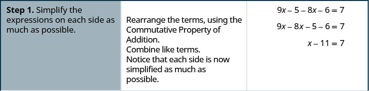
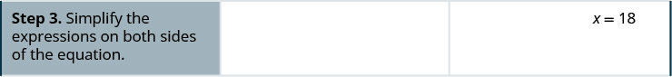
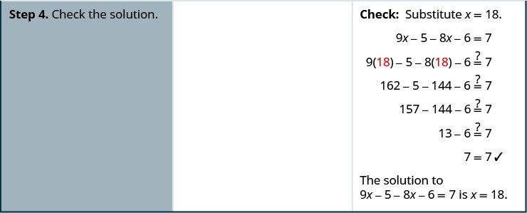
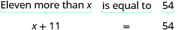
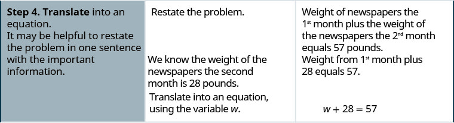
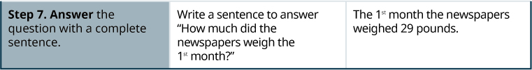
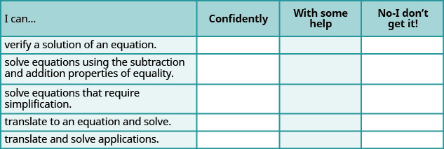
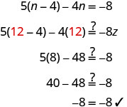

ગુજરાતી આકૃતિ-રજૂઆત અને મૂળ ચિત્રો
ગુજરાતી લખાણ અર્થ અને કોષ્ટકના સંબંધો જાળવે છે; મૂળ ફાઇલ અલગ ખોલી શકાય છે. ખાલી પ્રતિભાવ કોષોમાં કોઈ જવાબ ભર્યો નથી.
xની જગ્યાએ મૂકો.
મૂળ ચિત્ર અને વર્ણન
“xની જગ્યાએ 3/2 મૂકો” લખેલું છે. અપૂર્ણાંક 3/2માં અંશ 3 અને છેદ 2 લાલ છે અને તેમની વચ્ચે આડી રેખા છે.

| પગલું 1. દરેક બાજુની પદાવલીને શક્ય તેટલી સાદી કરો. | સરવાળાના ક્રમવિનિમયના ગુણધર્મથી પદો ફરી ગોઠવો. સજાતીય પદો જોડો. હવે દરેક બાજુ શક્ય તેટલી સાદી છે. |
|---|
મૂળ ચિત્ર અને વર્ણન
ચાર પગલાંની પ્રક્રિયાનું પગલું 1: ત્રણ સ્તંભ. દરેક બાજુ સાદી કરો; સરવાળાનો ક્રમ બદલી સજાતીય પદો જોડો: 9x − 5 − 8x − 6 = 7; 9x − 8x − 5 − 6 = 7; x − 11 = 7.

{kind=link}
| પગલું 2. ચલને એકલું રાખો. | હવે xને એકલું રાખો. બાદબાકીની અસર દૂર કરવા બંને બાજુએ 11 ઉમેરો. | બંને બાજુની સમાન ક્રિયા: |
|---|
મૂળ ચિત્ર અને વર્ણન
કોષ્ટકની બીજી હરોળના પહેલા ખાનામાં “પગલું 2. ચલને એકલું રાખો” છે. બીજા ખાનામાં “હવે xને એકલું રાખો. બંને બાજુએ 11 ઉમેરીને બાદબાકીની અસર દૂર કરો” લખેલું છે. ત્રીજા ખાનામાં x − 11 + 11 = 7 + 11 છે અને બંને બાજુના +11 લાલ છે.

| પગલું 3. સમીકરણની બંને બાજુ સાદું રૂપ આપો. |
|---|
મૂળ ચિત્ર અને વર્ણન
કોષ્ટકની ત્રીજી હરોળના પહેલા ખાનામાં “પગલું 3. સમીકરણની બંને બાજુને સાદું રૂપ આપો” લખેલું છે. બીજું ખાનું ખાલી છે. ત્રીજા ખાનામાં x = 18 છે.

{kind=link}
| પગલું 4. ઉકેલ ચકાસો. | ચકાસણી: xની જગ્યાએ 18 મૂકો. બંને બાજુ સમાન છે. સમીકરણ 9x − 5 − 8x − 6 = 7નો ઉકેલ x = 18 છે. |
|---|
મૂળ ચિત્ર અને વર્ણન
કોષ્ટકની ચોથી અને છેલ્લી હરોળના પહેલા ખાનામાં “પગલું 4. ઉકેલની ચકાસણી કરો” લખેલું છે. બીજું ખાનું ખાલી છે. ત્રીજા ખાનામાં “ચકાસણી: x = 18 અવેજી કરો” લખેલું છે. નીચે 9x − 5 − 8x − 6 = 7 છે. પછી બંને xની જગ્યાએ કૌંસમાં લાલ 18 મૂકીને 9(18) − 5 − 8(18) − 6 ?= 7 છે. તેની નીચે ક્રમે 162 − 5 − 144 − 6 ?= 7, 157 − 144 − 6 ?= 7, 13 − 6 ?= 7 અને છેલ્લે ખરાની નિશાની સાથે 7 = 7 છે.

{kind=link}
| x કરતાં અગિયાર વધુ | બરાબર છે | 54 |
મૂળ ચિત્ર અને વર્ણન
“x કરતાં અગિયાર વધુ એ 54ની બરાબર છે” વાક્યનાં અનુરૂપ ભાગો નીચે રેખાંકિત કરીને તેને x + 11 = 54 બીજગણિતીય સમીકરણમાં ફેરવેલું છે.

{kind=link}
| 12t અને 11tનો તફાવત | છે | −14 |
મૂળ ચિત્ર અને વર્ણન
“12t અને 11tનો તફાવત −14 છે” વાક્યને 12t − 11t = −14 બીજગણિતીય સમીકરણમાં ફેરવેલું છે.

| પગલું 1. પ્રશ્ન વાંચો. દરેક શબ્દ અને વિચાર સમજો. | પ્રશ્ન સમાચારપત્રોના વજન વિશે છે. |
|---|
મૂળ ચિત્ર અને વર્ણન
સાત પગલાંની પ્રક્રિયાનું પગલું 1: ત્રણ સ્તંભ. પ્રશ્ન વાંચો અને દરેક શબ્દ તથા વિચાર સમજો. પ્રશ્ન સમાચારપત્રોના વજન વિશે છે. ત્રીજો કોષ ખાલી છે.
{kind=link}
| પગલું 2. શું શોધવાનું છે તે ઓળખો. | આપણે શું શોધવાનું છે? | પહેલા મહિનામાં સમાચારપત્રોનું વજન કેટલું હતું? |
|---|
મૂળ ચિત્ર અને વર્ણન
પગલું 2: શું શોધવાનું છે તે ઓળખો. પહેલા મહિનામાં સમાચારપત્રોનું વજન કેટલું હતું તે શોધવાનું છે.

| પગલું 3. શોધવાની રાશિને નામ આપો. તે દર્શાવવા ચલ પસંદ કરો. | ચલ પસંદ કરો. | ધારો કે w = પહેલા મહિનામાં સમાચારપત્રોનું વજન (પાઉન્ડમાં). |
|---|
મૂળ ચિત્ર અને વર્ણન
ત્રીજી હરોળના પહેલા ખાનામાં “પગલું 3. આપણે જે શોધીએ છીએ તેને નામ આપો. તે રાશિ દર્શાવવા ચલ પસંદ કરો” છે. બીજા ખાનામાં “ચલ પસંદ કરો” અને ત્રીજા ખાનામાં “w = પહેલા મહિનાનાં છાપાંનું વજન લો” લખેલું છે.

| પગલું 4. સમીકરણ બનાવો. જરૂરી માહિતી સાથે પ્રશ્નને એક વાક્યમાં ફરી કહેવાથી મદદ મળી શકે. | પ્રશ્ન ફરી કહો. બીજા મહિનામાં વજન 28 પાઉન્ડ હતું. પછી w ચલ વડે સમીકરણ બનાવો. | પહેલા મહિનાનું વજન + બીજા મહિનાનું વજન = 57 પાઉન્ડ. પહેલા મહિનાનું વજન + 28 = 57. |
|---|
મૂળ ચિત્ર અને વર્ણન
ચોથી હરોળના પહેલા ખાનામાં “પગલું 4. સમીકરણમાં ફેરવો. મહત્ત્વની માહિતી સાથે પ્રશ્નને એક વાક્યમાં ફરી કહેવું ઉપયોગી થઈ શકે” છે. બીજા ખાનામાં “પ્રશ્ન ફરી કહો. બીજા મહિનાનાં છાપાંનું વજન 28 પાઉન્ડ છે તે આપણે જાણીએ છીએ” લખેલું છે. ત્રીજા ખાનામાં “પહેલા મહિનાનાં છાપાંનું વજન વત્તા બીજા મહિનાનાં છાપાંનું વજન બરાબર 57 પાઉન્ડ. પહેલા મહિનાનું વજન વત્તા 28 બરાબર 57” લખેલું છે. તેની નીચે બીજા ખાનામાં “w ચલનો ઉપયોગ કરીને સમીકરણમાં ફેરવો” અને ત્રીજા ખાનામાં w + 28 = 57 છે.

{kind=link}
| પગલું 5. યોગ્ય બીજગણિતીય પદ્ધતિથી સમીકરણ ઉકેલો. | ઉકેલો. | બંને બાજુની સમાન ક્રિયા: |
|---|
મૂળ ચિત્ર અને વર્ણન
પાંચમી હરોળના પહેલા ખાનામાં “પગલું 5. બીજગણિતની યોગ્ય રીતોથી સમીકરણ ઉકેલો” છે. બીજા ખાનામાં “ઉકેલો” અને ત્રીજા ખાનામાં બંને બાજુથી 28 બાદ કરેલું w + 28 − 28 = 57 − 28 છે; બંને −28 લાલ છે. તેની નીચે w = 29 છે.

| પગલું 6. જવાબ ચકાસો અને સંદર્ભમાં યોગ્ય છે તેની ખાતરી કરો. | શું પહેલા અને બીજા મહિનાનાં વજનનો સરવાળો 57 પાઉન્ડ થાય છે? | હા, બંને બાજુ સમાન છે. |
|---|
મૂળ ચિત્ર અને વર્ણન
છઠ્ઠી હરોળના પહેલા ખાનામાં “પગલું 6. જવાબ ચકાસો અને તે અર્થપૂર્ણ છે તેની ખાતરી કરો” છે. બીજા ખાનામાં “પહેલા મહિનાનું વજન વત્તા બીજા મહિનાનું વજન 57 પાઉન્ડ થાય છે?” લખેલું છે. ત્રીજા ખાનામાં 29 + 28 ?= 57 અને તેની નીચે ખરાની નિશાની સાથે 57 = 57 છે.

| પગલું 7. સંપૂર્ણ વાક્યમાં જવાબ આપો. | “પહેલા મહિનામાં સમાચારપત્રોનું વજન કેટલું હતું?” તેનો જવાબ વાક્યમાં લખો. | પહેલા મહિનામાં સમાચારપત્રોનું વજન 29 પાઉન્ડ હતું. |
|---|
મૂળ ચિત્ર અને વર્ણન
પગલું 7: સંપૂર્ણ વાક્યમાં જવાબ આપો. પહેલા મહિનામાં સમાચારપત્રોનું વજન કેટલું હતું? પહેલા મહિનામાં સમાચારપત્રોનું વજન 29 પાઉન્ડ હતું.

{kind=link}
| હું આ કરી શકું છું… | વિશ્વાસપૂર્વક | થોડી મદદથી | હજી સમજાતું નથી |
|---|---|---|---|
| સમીકરણનો ઉકેલ ચકાસવો | |||
| સમાનતાના બાદબાકી અને સરવાળાના ગુણધર્મોથી સમીકરણ ઉકેલવું | |||
| પહેલાં સાદું રૂપ આપવું પડે તેવાં સમીકરણો ઉકેલવાં | |||
| શબ્દોમાં આપેલી વાત પરથી સમીકરણ બનાવી ઉકેલવું | |||
| વ્યવહારના પ્રશ્નો પરથી સમીકરણ બનાવી ઉકેલવું |
મૂળ ચિત્ર અને વર્ણન
આ છ હરોળ અને ચાર સ્તંભવાળું કોષ્ટક છે. મથાળાની પહેલી હરોળમાં ડાબેથી જમણે “હું આ કરી શકું છું…”, “આત્મવિશ્વાસપૂર્વક”, “થોડી મદદથી” અને “ના—મને સમજાતું નથી!” લખેલું છે. “હું આ કરી શકું છું…”ની નીચે પહેલા સ્તંભમાં “સમીકરણનો ઉકેલ ચકાસવો”, “સમાનતાના બાદબાકી અને સરવાળાના ગુણધર્મોથી સમીકરણો ઉકેલવાં”, “સાદું રૂપ આપવું જરૂરી હોય તેવાં સમીકરણો ઉકેલવાં”, “સમીકરણમાં ફેરવીને ઉકેલવું” અને “વ્યવહારુ પ્રશ્નોને સમીકરણમાં ફેરવીને ઉકેલવા” લખેલું છે. બાકીનાં ખાનાં ખાલી છે.

{kind=link}
આકૃતિ 011a: મૂળ છાપભૂલની નોંધ
